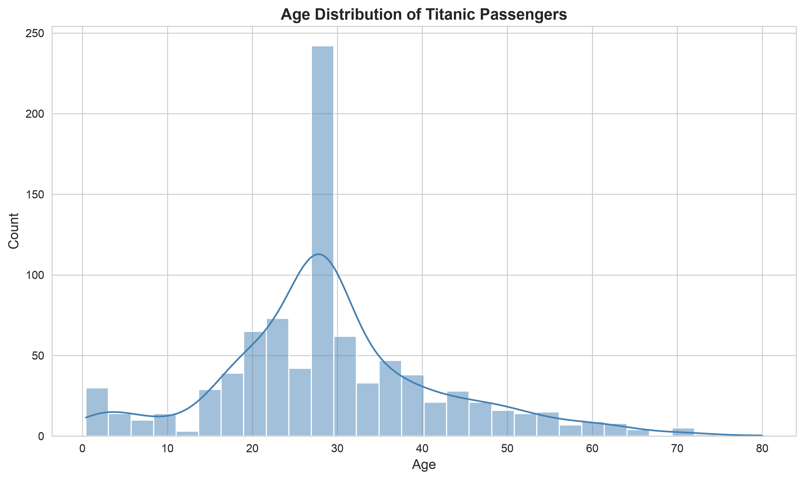
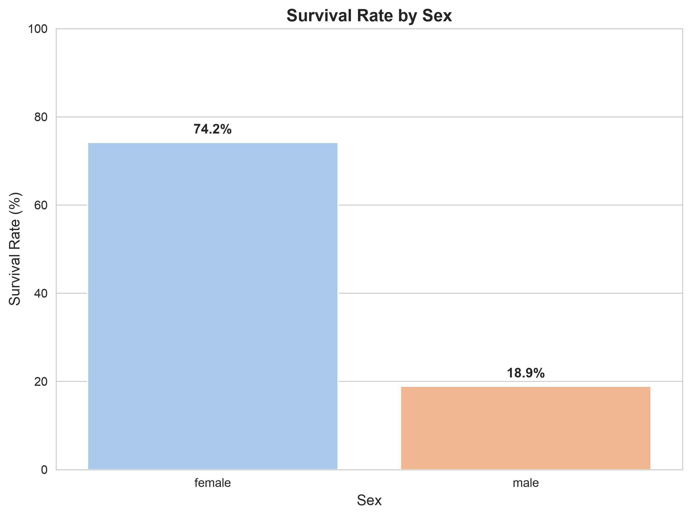
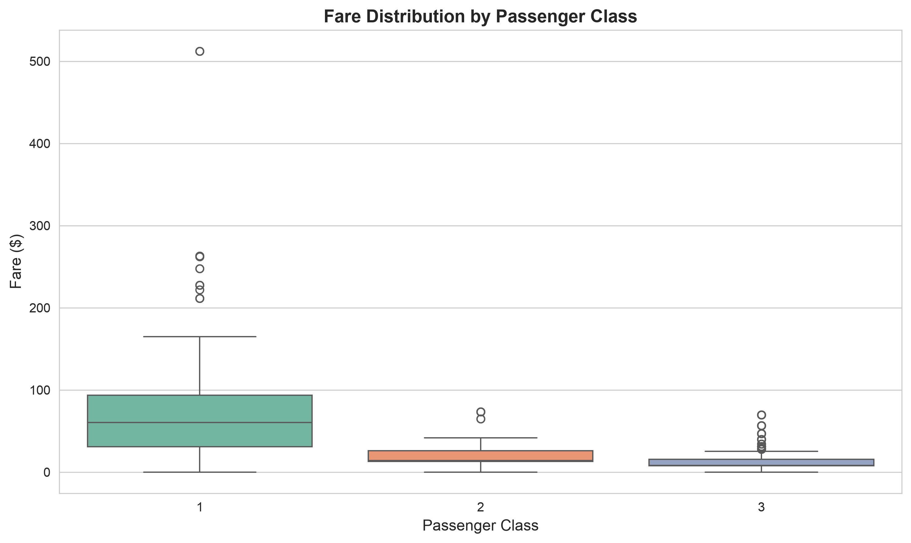
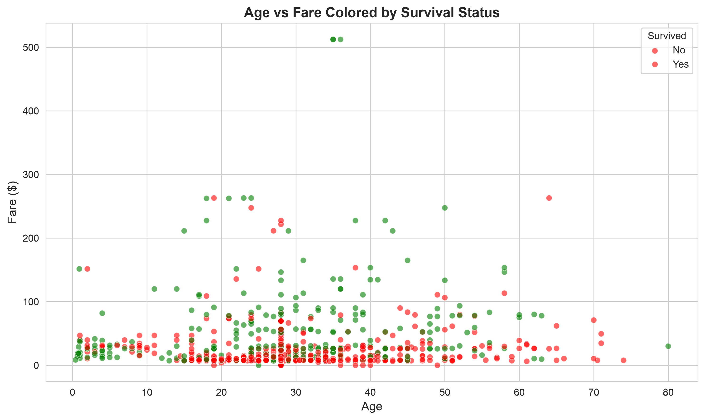
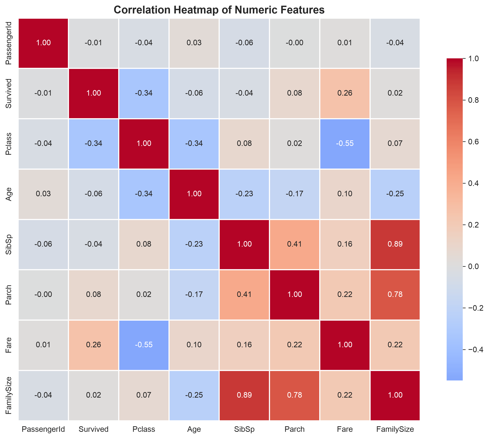
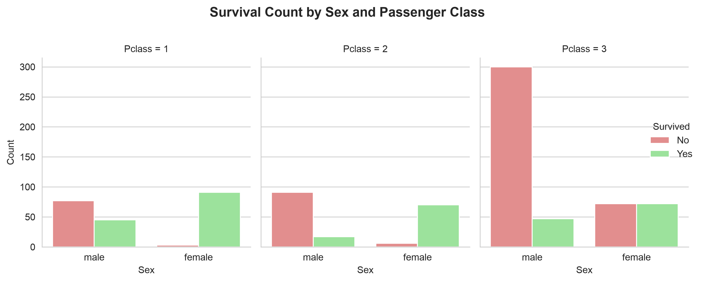

A comprehensive data science project exploring the Titanic dataset through advanced data cleaning, feature engineering, and visual storytelling. Using pandas, seaborn, and matplotlib, I engineered new features like FamilySize and AgeGroup, then created six insightful visualizations revealing patterns in passenger demographics, survival rates, and socioeconomic factors that influenced outcomes during the historic disaster.

The age distribution shows a right-skewed pattern with most passengers between 20-40 years old. The KDE curve reveals a notable peak around 25-30 years, indicating young adults were the largest demographic group aboard the Titanic.

Females had a dramatically higher survival rate (74.2%) compared to males (18.9%), highlighting the "women and children first" protocol followed during the evacuation. This 4x difference in survival rates is one of the most striking patterns in the dataset.

First-class passengers paid significantly higher fares (median ~$60) with many outliers above $100, while third-class fares were much lower (median ~$10). The wide spread in first-class fares indicates substantial wealth inequality even within the upper class.

The scatter plot reveals that higher-paying passengers (green points) had better survival rates, particularly among those who paid over $50. However, age alone doesn't show a clear survival pattern, suggesting fare/class was more influential than age in determining survival outcomes.

The strongest correlation is between Pclass and Fare (-0.55), confirming that higher class numbers (lower class) paid less. Survival shows moderate positive correlation with Fare (0.26) and negative correlation with Pclass (-0.34), indicating wealthier passengers in higher classes had better survival chances.

The facet grid reveals that first-class females had the highest survival rates, while third-class males had the lowest. This visualization confirms that both gender and class were critical factors—first-class women survived at much higher rates than third-class men, demonstrating intersectional privilege in the evacuation process.
Opens in nbviewer.org for easy in-browser viewing